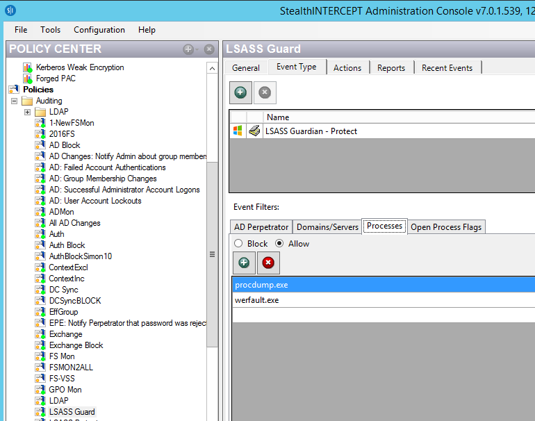

Summary: SI Agent configured with LSASS Guardian Protect policy may prevent LSASS dump file creation
Issue:
The default configuration of an LSASS Guardian Protect policy registration, which
blocks programs not in the process 'allow' list from accessing LSASS, can result in an
inability to create LSASS dump files.
Instructions:
To resolve this issue add the following names to the process filter tab "allow"
list:
Werfault.exe
Procdump.exe
Werfault.exe is used internally by windows OS to create crash dump files.
Procdump.exe is often used to get non crash dump files such as process hangs.
If attempting to get a dump file from task manager then may instead add
"taskmgr.exe".
At a minimum it is recommended to add "werfault.exe" to the allow list so that if an
unexpected LSASS crash occurs at any time the Windows OS will be able to create a
crash dump file for later review.
See following SI Console example:

Instructions:
To resolve this issue add the following names to the process filter tab "allow"
list:
Werfault.exe
Procdump.exe
Werfault.exe is used internally by windows OS to create crash dump files.
Procdump.exe is often used to get non crash dump files such as process hangs.
If attempting to get a dump file from task manager then may instead add
"taskmgr.exe".
At a minimum it is recommended to add "werfault.exe" to the allow list so that if an
unexpected LSASS crash occurs at any time the Windows OS will be able to create a
crash dump file for later review.
See following SI Console example: